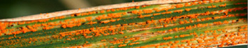

About
Welcome to the Cantu Lab in the Department of Viticulture &
Enology at the University of California, Davis.
We are a multidisciplinary research group interested in genomics
of plant and microbes.
Biological systems can be better describe as adaptive and
environmentally responsive networks of highly connected nodes
rather than as collections of rigidly defined linear
biochemical pathways. We integrate principles of systems
biology and quantitative genetics and use genomics and
bioinformatics to dissect the molecular networks underlying
complex traits in cultivated plants, including grape, tomato,
and wheat.
Our research topics range from the evolution of pathogenicity
in fungal plant pathogens, the relation between plant development
and the association with microorganisms, and the molecular
determinants of fruit development and ripening.

Interested in joining our group? We are interested in highly motivated new colleagues to expand our research group. Students and reasercher at any level in their career (postdoc, PhD, MSc, BSc) and with outstanding training in plant molecular biology, genetics, genomics, bioinformatics, computer science, or statistics are invited to contact us at dacantu [at] ucdavis [dot] edu to discuss possible projects.
